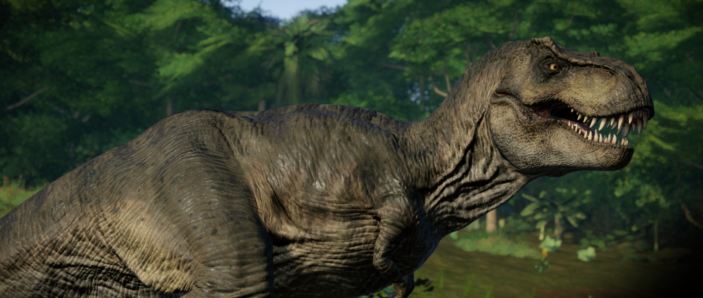

O mais famoso de todos os dinossauros, o Tiranossauro possui uma reputação aterrorizante em todo o mundo graças ao seu tamanho, poder e agressividade: um status corroborado por seu nome latino, que se traduz como “rei dos lagartos tiranos”. Com cerca de 13,5 m de comprimento e 8 toneladas de peso, ele foi o predador apical de sua época, com a mandíbula mais poderosa conhecida pela ciência e fileiras de dentes grandes e serrilhados.